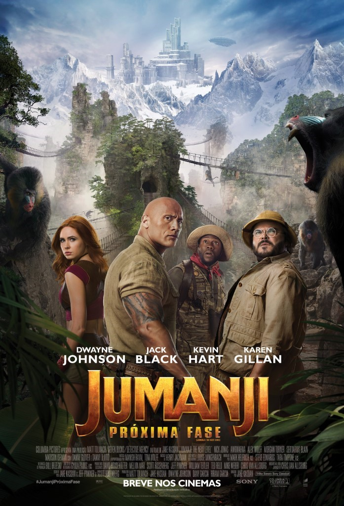

Os Caça-Fantasmas
Atualmente uma respeitada professora da Universidade de Columbia, Erin Gilbert (Kristen Wiig) escreveu anos atrás um livro sobre a existência de fantasmas em parceria com a colega Abby Yates (Melissa McCarthy). A obra, que nunca foi levada a sério, é descoberta por seus pares acadêmicos e Erin perde o emprego. Quando Patty Tolan (Leslie Jones), funcionária do metrô de Nova York, presencia estranhos eventos no subterrâneo, Erin, Abby e Jillian Holtzmann (Kate McKinnon) se unem e partem para a ação pela salvação da cidade e do mundo.
Jumanji 2
Em Jumanji: Próxima Fase, tentado em revisitar o mundo de Jumanji, Spencer (Alex Wolff) decide consertar o jogo de videogame que permite que os jogadores sejam transportados ao local. Logo o quarteto formado por Smolder Bravestone (Dwayne Johnson), Moose Finbar (Kevin Hart), Shelly Oberon (Jack Black) e Ruby Roundhouse (Karen Gillan) ressurge, agora comandado por outras pessoas: os avôs de Spencer e Fridge assumem as personas de Bravestone e Finbar, enquanto o próprio Fridge (Ser'Darius Blain) agora está sob a pele de Oberon.